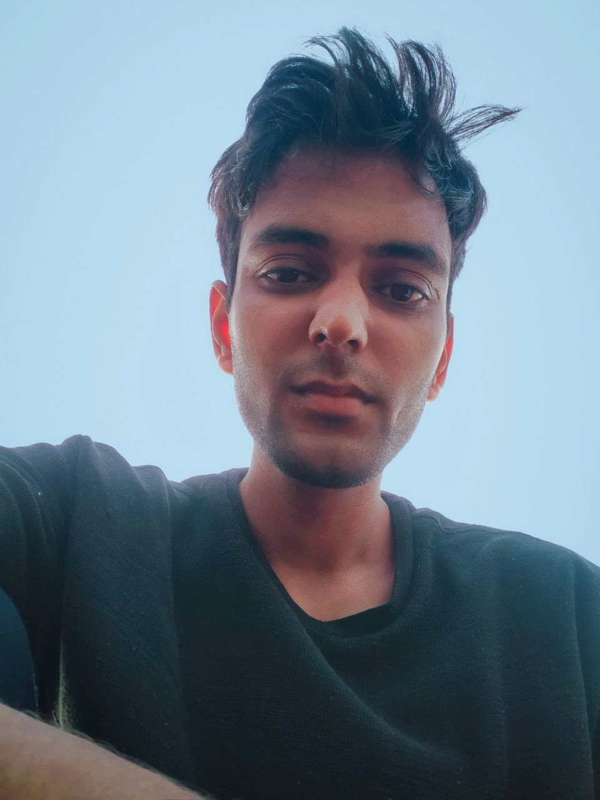

|  | Kush Kumar |
I am a self taught web developer. I am hardworking and dedicated individual with passion in technology. I am also doing Data Science from IIT-M online education.
As a fresher with zero formal work experience, I am eager to apply my knowledge and skills in a professional setting. Although I have not yet graduated, I have completed numerous projects and assignments that have honed my abilities in web development and data science. I am enthusiastic about starting my career and am confident in my ability to contribute effectively to a team.